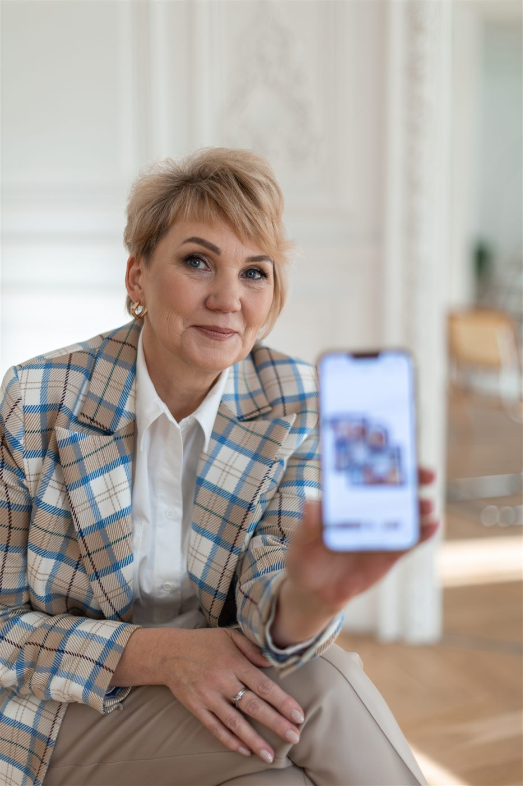
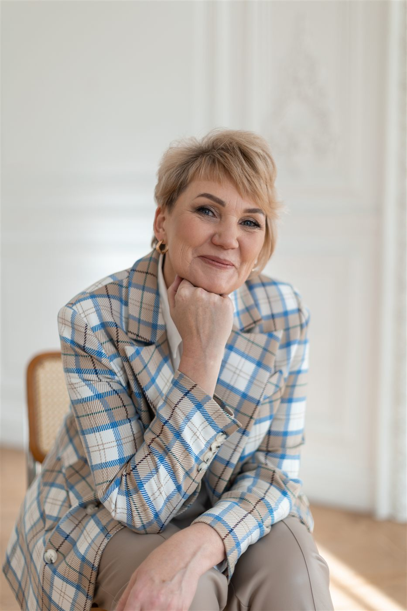
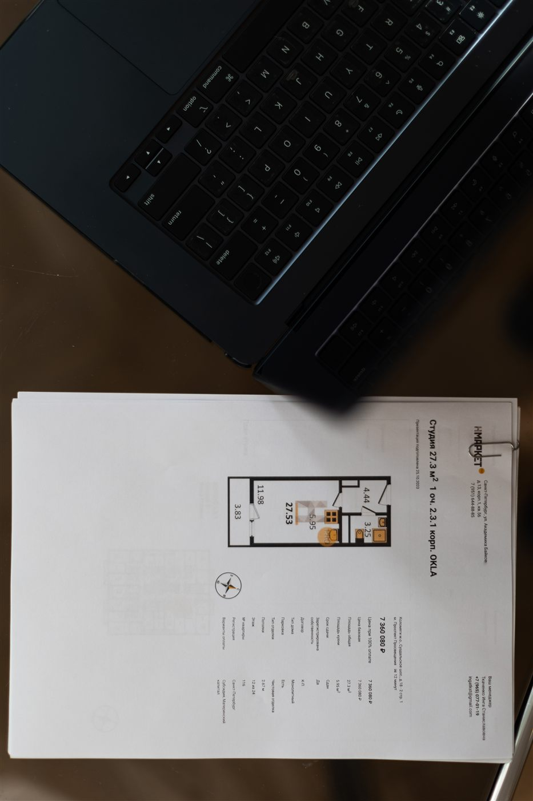
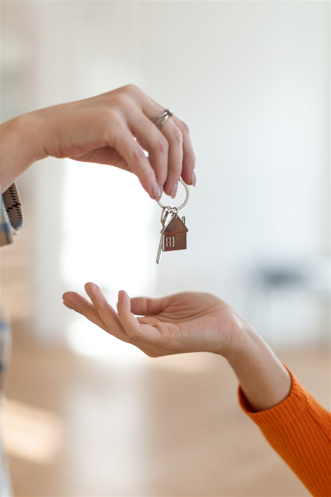

Находим вашу тему, пишем в вашем стиле, делаем ролики с вашим аватаром и публикуем на YouTube и в Telegram. Вы читаете и говорите «да»: ни камеры, ни света, ни десятков дублей.
Ваше время: созвон 30-40 минут, потом около часа в неделю, когда вам удобно. Выпуск: 3 поста и 3 видео в неделю.
Хотите сначала попробовать? Пакет «Старт»: 20 тем, контент-план на 2 недели и 5 сценариев для коротких видео. 10 000 ₽ Подробнее о пакетахПоказы, сделки, документы. На соцсети не остаётся ни сил, ни времени.
Тема есть, а как превратить её в понятный ролик или пост, непонятно.
В нашей профессии одна ошибка в тексте стоит клиентов и репутации.
Поэтому у нас ИИ помогает с черновиком, факты берутся только от вас, а каждое слово вы утверждаете сами.

Сначала мы знакомимся с вами. Выясняем:
Потом находим узкое направление, по которому вас будут узнавать.
Пример - моя ниша: проверка документов, этим я занимаюсь все 18 лет. Проверка проводится с использованием сервисов, а клиент получает отчёт, который подтверждает, что он добросовестный покупатель, и может служить доказательством в суде. С такой темой проще быть заметным.
Созвон на 30-40 минут. Затем ИИ-ассистент для «распаковки» задаёт вопросы: как вы говорите, что вам интересно, где ваши сильные и слабые стороны, о чём чаще спрашивают клиенты.
Отвечать можно по кусочкам, в свободное время. Мы смотрим ваши соцсети, чтобы поймать стиль, и находим ваше узкое направление.
Смотрим, что сейчас интересно людям и какие темы набирают просмотры, и выбираем те, о которых вы можете рассказать по-своему. Чужие ролики и тексты не копируем: берём тему, а говорим вашими словами и из вашего опыта.
Вы получаете три варианта контент-плана и выбираете подходящий: это 15-20 минут. Длина плана зависит от пакета: 2 недели в «Старте», 4 недели в «Системе», месяц вперёд в «Под ключ».
Факты берутся только от вас: из разговора, ваших постов и вопросов клиентов. ИИ пишет по этим материалам и ничего не добавляет от себя.
Сценарии и тексты приходят вам на утверждение, около 30 минут. Вы читаете и отвечаете: «верно» или «исправить».
Для аватара нужно около 10 ваших фото и 2-3 видео, где вы что-то говорите. Студийные фото - идеально, но подойдёт и съёмка на телефон, без студии и макияжа: главное, чтобы кадры были немного разными.
Делаем видео и посты под каждую площадку, к постам добавляем полезный файл и призыв написать вам. Вы выбираете, что подходит, и одобряете.
Ваше время: разговор и «верно / исправить». Съёмки, ролики и публикации - на нас. Ничего не выходит без вашего «да». Первые материалы готовы к концу третьей недели.
Пример темы: «Признаки банкротства продавца».
Короткое видео
Сильная первая фраза, один признак, понятный вывод.
Развёрнутый пост
Все признаки списком, где проверить, на что смотреть в документах. К посту - чек-лист и призыв написать кодовое слово.
Мой пример - проверка документов, это моя узкая тема. У вас она может быть другой: обзоры застройщиков, районов, жилых комплексов. Ниже примеры тем. Это темы, а не готовые тексты: факты для каждого выпуска берутся только от вас.
Другие площадки - по запросу.
Канал «Как не потерять квартиру» - образец того, как выглядит готовый канал. Аватар сделан по моим фото и видео, а каждое слово в роликах проверено лично мной. Это пример работы, а не отчёт о результатах.
Telegram-канал показывает, как посты приводят заявки: полезный файл и призыв написать слово «ПРОВЕРКА».

Я практикующий риелтор, 18 лет в недвижимости: вторичка, новостройки, загородная, аренда. Сейчас моё основное направление - две услуги, там, где людям страшнее всего:

Отдельная услуга: проверка с использованием сервисов и отчёт для покупателя.

Расчёты и организация самой сделки.
Когда я решила вести соцсети, главной сложностью оказалась не тема, а съёмка: свет, макияж, много дублей, и всё это после рабочего дня. Сегодня можно оживить фото и озвучить свой текст, а риелтору не нужно вставать перед камерой. Я проверила это на себе: знаю цену каждому слову, свои ролики я перерабатывала много раз. Поэтому делаю это вдумчиво, а не потоком, и теперь помогаю коллегам.
Подбираем темы под ваших клиентов. Тексты пишем по образцу ваших собственных постов, чтобы они звучали как вы. Вы их согласуете.
Вам не нужно сниматься: делаем по вашим фото и видео, вы одобряете каждый ролик.
Короткое видео для YouTube и развёрнутый пост для Telegram.
К постам прикладываем чек-лист или образец документа, в конце даём кодовое слово. Так соцсети приводят заявки, а не только просмотры.
Вы отмечаете, что выпускать, остальное мы делаем сами.
Факты только ваши, а мы следим за ясностью, длиной и подачей под каждую площадку. Если я увижу в материале явную ошибку, скажу об этом. Решение остаётся за вами: это ваш канал.
Кому-то нужен полный пакет, кому-то только часть. Ниже цены пакетов и отдельных услуг. Если нужна только часть, мы подберём состав на созвоне и назовём цену.
Разделить работу. Темы, сценарии, тексты, видеоконтент и публикации берём на себя мы, а вы тратите около часа в неделю: читаете, говорите «верно» или «исправить» и выбираете, что выпускать. Подробнее - в блоке «Как это устроено».
Да. Аватар создаётся по вашим фото и видео, с вашего согласия, и используется только для ваших материалов.
Да, насколько получится. Вы даёте 3-4 своих настоящих поста, ИИ учится на них, как вы строите фразы и о чём говорите. Всё равно каждый текст читаете вы, и без вашего «да» он не выходит.
Факты берутся только от вас, ИИ ничего не добавляет от себя, а каждый текст вы утверждаете: «верно» или «исправить». Без вашего «да» ничего не выходит.
Нет, ни студии, ни света, ни макияжа. Для аватара нужно около 10 ваших фото и 2-3 видео, где вы что-то говорите. Есть студийные фото - отлично. Нет - можно снять себя на телефон, кадры только должны быть немного разными.
Сначала созвон на 30-40 минут, ответы ассистенту по кусочкам в свободное время и выбор из трёх вариантов контент-плана (15-20 минут). Дальше около часа в неделю: 30-40 минут на контент-план на следующий месяц, сценарии и тексты и столько же на готовые ролики и посты. Читать можно в любое свободное время, например утром за кофе. Ваша задача: выбрать, что подходит, сказать «да» или «нет» и при желании внести правки. Сколько уйдёт времени, зависит от того, как внимательно вы читаете.
Первая неделя - знакомство и «распаковка», вторая - контент-план и тексты, третья - ролики. К концу третьей недели первые материалы готовы, дальше публикации идут по расписанию.
Экспертный контент нельзя штамповать: тему надо выбрать, каждое слово выверить, а в коротком ролике сохранить главное. Мы выбираем точность: три темы в неделю, каждую можно сделать видео для YouTube и постом для Telegram. В пакете «Под ключ» объём больше: до пяти постов и пяти видео в неделю, срок запуска обсуждаем.
У площадок разная аудитория и разные привычки. В ленте коротких видео нужна быстрая мысль, в Telegram читатель готов к подробному разбору.
Мы следуем правилам площадок. На YouTube включаем пометку о том, что видео создано с помощью ИИ, чтобы зрители знали об этом и у вашего канала не было проблем.
Да, по запросу. Сейчас работаем с YouTube и Telegram.
Оставьте контакт, и я расскажу, как это будет выглядеть именно для вас.
Заявка приходит ко мне через сервис «Яндекс Формы». Политика конфиденциальности